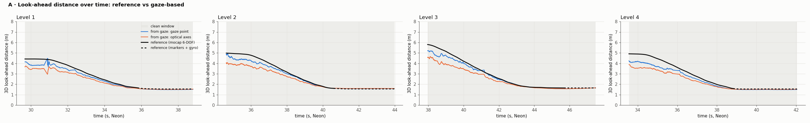
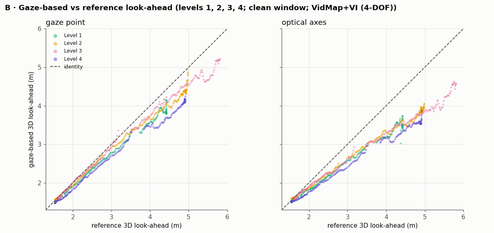
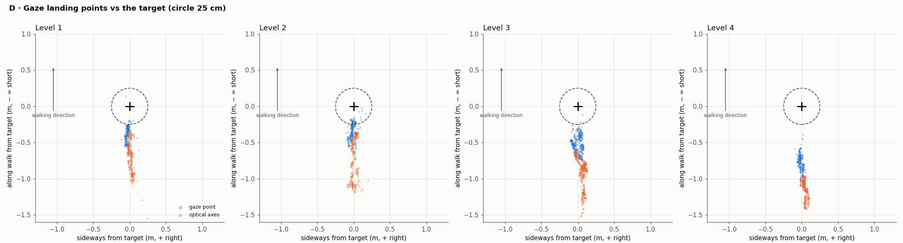
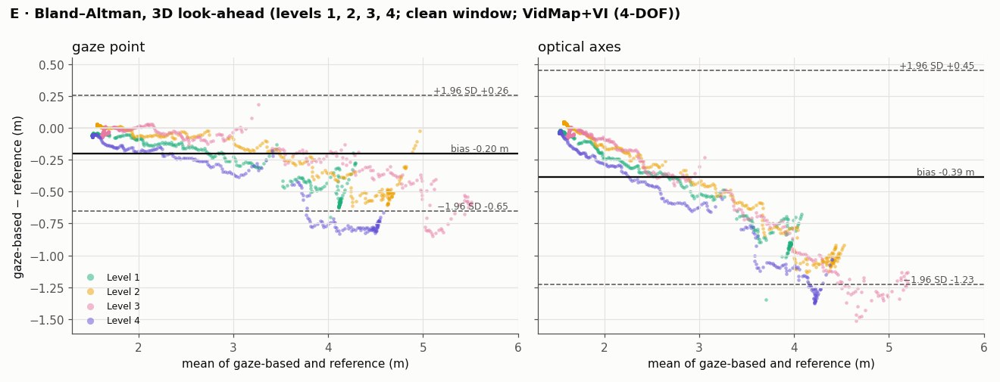

Look-ahead Distance Validation for Neon-IMU-Analysis
This page shows the validation of the look-ahead distance computed from Pupil Labs Neon gaze and our egocentric trajectories, against motion capture.
Pipeline
Pupil Labs Neon glasses and three IMUs (pelvis, left and right foot) are calibrated and time-synchronised. The Neon data go to the Pupil Labs analysis, which gives the eye and pupillometric metrics and the gaze direction; the gaze combined with the glasses' trajectory from our trajectory pipeline (VidMap + VI [3]) gives the look-ahead distance. In the validation the biomechanical branch is greyed out (validated separately), as are the eye and pupillometric metrics (taken as provided by Pupil Labs [2]); the red boxes give what each step is checked on.
Aim
Only the look-ahead distance — how far ahead on the ground a person looks while walking, an important metric for real-world analysis [8, 9] — is validated here. Other pupillometric and eye-kinematic metrics, such as fixations and saccades, are taken as provided by the Pupil Labs software [2].
Dataset
Four trials were collected in the motion capture laboratory at Liverpool John Moores University (Qualisys, 100 Hz). A target was made from a cluster of markers and placed at a constant location on the floor of the lab. In each trial the participant, wearing Neon glasses with four individual reflective markers, walked towards the target whilst fixating on it; the starting position was varied across the four trials. Each recording starts with five head nods, used to synchronise the Neon and the motion capture.
The trajectory of the eye-tracking glasses was obtained with our trajectory pipeline (VidMap + VI; trajectory validation [3]). The look-ahead distances obtained from the motion capture were compared with those obtained from the trajectory and Pupil Labs' gaze outputs, over the fixation period of each trial: from when the gaze arrives on the target to when it leaves it, marked with the events fixationStart and fixationEnd in Pupil Cloud.
| trial | fixation window (s) | duration (s) | start distance 3D / horizontal (m) | gaze samples | with reference | reference from markers + gyro |
|---|---|---|---|---|---|---|
| Level 1 | 29.68–38.81 | 9.1 | 4.42 / 4.10 | 1645 | 1645 | 34 % |
| Level 2 | 34.62–43.98 | 9.4 | 4.98 / 4.68 | 1818 | 1818 | 37 % |
| Level 3 | 37.96–47.47 | 9.5 | 5.79 / 5.55 | 1784 | 1784 | 20 % |
| Level 4 | 33.56–42.04 | 8.5 | 4.91 / 4.62 | 1586 | 1586 | 38 % |
Gaze samples at 200 Hz inside the fixation window (worn, no blinks). The mocap reference covers the samples inside the motion capture recording; where the glasses' rigid body is lost near the target (two of the four markers occluded while looking down), it comes from the remaining markers (see Reference).
Reference
The reference look-ahead distance is the 3D distance from the glasses to the target, from motion capture only:
- Glasses: the Qualisys 6-DOF pose of the Neon rigid body (four individual markers; origin at their centroid, about 1 cm from the scene camera). Frames where the pose misses one of its markers by more than 5 mm are dropped.
- Target: the mean of the median positions of the target's markers (static).
- Synchronisation: the Neon IMU and the motion capture clocks are aligned by correlating |Neon gyro| with the magnitude of the rigid body's angular velocity, fitted on the head nods (as in [3]).
- Near the target: when the participant looks down, QTM loses the rigid body (fewer than three markers visible). There, the orientation is carried forward from the last valid pose with the Neon gyroscope, and the position is computed from the remaining two markers with the known marker layout. Checked by simulating a 4 s loss where the full pose is known: position error 0.2–0.7 mm median, at most 1.6 mm.
The reference uses neither the trajectory pipeline, nor the gaze, nor a floor model.
Metrics
Look-ahead distance from gaze. At each gaze sample, the gaze ray is placed in the world with the camera pose from VidMap + VI and intersected with the floor (the horizontal plane at the target's height); the look-ahead distance is the 3D distance from the camera to that point. Two gaze rays:
- gaze point — Pupil Labs' gaze (scene-camera pixels, undistorted with the camera's calibration) as a ray from the scene camera;
- optical axes — Pupil Labs' 3D eye states: the mean of the two eyes' optical axes from the midpoint of the eyeball centres. The optical axis differs from the visual axis by a few degrees (angle kappa), which is not corrected here.
Trajectory. VidMap + VI over the whole recording, gravity-aligned by the IMU, with the scale kept at VidMap's metric scale (the VI graph's own scale estimate collapsed on these short, slow walks), and placed in the motion capture frame with a yaw + translation fit on the camera positions.
Errors, per gaze sample: the look-ahead error (gaze − reference) in metres and as a percentage of the reference; the angle between the gaze ray and the direction from the camera to the target; agreement as Bland–Altman bias and 95 % limits [7]. Medians over samples, by reference distance. The same metrics with the gaze rays on the motion-capture pose (rigid body × camera extrinsic) separate the gaze from the trajectory.
Results
ScaRF-SLAM maps with the gaze
Dense maps from ScaRF-SLAM [5] given our VidMap + VI trajectories, seen from behind each walk. Red: camera path; black frame: the scene camera; black dot: the target (motion capture); blue line: the current gaze ray (gaze point); blue dots: where the earlier gaze landed on the floor. Inset: the scene camera with the gaze point. The map's floor lies 0.1–0.4 m above the true floor, because ScaRF-SLAM scales its depth to the trajectory, whose scale is too small on most trials (below); the gaze markers are drawn on top. The look-ahead analysis does not use the map.
Look-ahead error by reference distance (all trials, VidMap + VI)
| reference 3D look-ahead (m) | samples | gaze point | optical axes | ||||
|---|---|---|---|---|---|---|---|
| error (m) | error (%) | angle (°) | error (m) | error (%) | angle (°) | ||
| 1.5–2 | 3224 | -0.05 | -3.0 | 13.9 | -0.03 | -2.0 | 18.3 |
| 2–2.5 | 634 | -0.09 | -4.1 | 7.8 | -0.22 | -9.6 | 13.3 |
| 2.5–3 | 486 | -0.15 | -5.7 | 4.9 | -0.37 | -13.3 | 10.6 |
| 3–4 | 784 | -0.26 | -7.2 | 3.2 | -0.58 | -16.0 | 7.1 |
| 4–5 | 1467 | -0.52 | -11.3 | 2.6 | -1.01 | -21.4 | 6.2 |
| 5–6.5 | 238 | -0.58 | -10.2 | 1.7 | -1.26 | -23.4 | 5.4 |
Medians over the samples of the four trials in each bin. Negative: the gaze lands short of the target. The 5–6.5 m bin comes from Level 3 only.
Per trial
| trial | samples | gaze point · VidMap + VI | optical axes · VidMap + VI | on the mocap pose (%) | |||
|---|---|---|---|---|---|---|---|
| error (m) | error (%) | error (m) | error (%) | gaze point | optical axes | ||
| Level 1 | 1645 | -0.13 | -5.2 | -0.26 | -11.3 | -0.9 | -7.7 |
| Level 2 | 1818 | -0.04 | -1.6 | -0.15 | -7.0 | -5.8 | -9.7 |
| Level 3 | 1784 | -0.06 | -3.5 | -0.09 | -4.7 | -4.4 | -7.9 |
| Level 4 | 1586 | -0.17 | -8.1 | -0.27 | -12.8 | -4.1 | -8.7 |
Median 3D look-ahead error over each trial's fixation window. Right: the same with the gaze rays placed on the motion capture pose instead of VidMap + VI.
Horizontal look-ahead (all trials, VidMap + VI)
| reference horizontal look-ahead (m) | samples | gaze point | optical axes | ||||
|---|---|---|---|---|---|---|---|
| error (m) | error (%) | angle (°) | error (m) | error (%) | angle (°) | ||
| 0.5–1 | 589 | -0.09 | -12.7 | 17.0 | -0.22 | -31.2 | 22.3 |
| 1–2 | 920 | -0.13 | -8.7 | 7.9 | -0.33 | -23.3 | 13.2 |
| 2–3 | 742 | -0.22 | -9.4 | 4.4 | -0.53 | -21.9 | 9.2 |
| 3–4 | 787 | -0.36 | -10.0 | 2.9 | -0.81 | -22.4 | 6.7 |
| 4–6 | 1360 | -0.59 | -13.0 | 2.4 | -1.15 | -25.6 | 6.0 |
The same, with the look-ahead distance measured along the floor. The 3D distance includes the eye height (about 1.6 m) shared by both, so its percentages are smaller, especially close to the target.
Trajectory accuracy (VidMap + VI vs motion capture)
| trial | mocap path (m) | duration (s) | ATE, yaw + translation (m) | ATE, Sim(3) (m) | scale (Sim(3)) | rotation error (°) |
|---|---|---|---|---|---|---|
| Level 1 | 6.5 | 21 | 0.094 | 0.047 | 1.09 | 2.9 |
| Level 2 | 7.2 | 22 | 0.085 | 0.066 | 1.05 | 1.7 |
| Level 3 | 9.0 | 25 | 0.318 | 0.151 | 1.16 | 2.5 |
| Level 4 | 8.2 | 19 | 0.236 | 0.084 | 1.26 | 1.4 |
Over the motion capture span of each trial. ATE after a yaw + translation fit (the transform used above) and after a Sim(3) fit; the Sim(3) scale shows VidMap's scale error (1 = metric). For comparison, VidMap + VI on the longer mocap walks of the trajectory validation (32–69 s): ATE 0.08 m median [3].
Figures

Look-ahead distance over time: reference (black; dashed where it comes from the remaining markers + gyro) and from gaze, VidMap + VI. Grey: the fixation window.

Gaze-based against reference 3D look-ahead, all trials, VidMap + VI (every 5th sample).

Where the gaze lands on the floor relative to the target, rotated so that the walking direction points up (circle: 25 cm).

Bland–Altman, 3D look-ahead, all trials, VidMap + VI. The 200 Hz samples are strongly correlated, so the limits are descriptive.
Summary
- The gaze-based look-ahead distance is consistently shorter than the reference, and the error grows with distance: with the gaze point it is small at 1.5–2 m (-3.0 %) and reaches -11.3 % at 4–5 m (3D). The gaze lands short of the target rather than beside it, i.e. the gaze direction is slightly too low.
- Pupil Labs' gaze point is about twice as accurate as the optical axes (-21.4 % at 4–5 m); the optical axes would need a per-person kappa correction. Bland–Altman bias: -0.20 m (gaze point) and -0.39 m (optical axes).
- With the gaze on the motion capture pose the pattern is the same, so the bias comes from the gaze, not the trajectory.
- The trajectory was not very accurate here (ATE 0.08–0.32 m, Sim(3) scale up to 1.26, i.e. the trajectory up to 21 % too small) because of the short movement periods: the IMU could not fix the scale on these short, slow walks, so VidMap's own metric scale was used. Its height and tilt errors explain most of the difference between trials (largest in Level 4).
References
- Castellaz, Wouda & van Beijnum. Estimating 3D Ground Reaction Forces During Daily Activities: A Reduced Sensor Setup and Virtual Pivot Point Approach. IEEE Transactions on Neural Systems and Rehabilitation Engineering 33 (2025).
- Pupil Labs. Neon documentation (gaze, 3D eye states, fixations and saccades).
- Radhakrishnan & Hollands. Metric trajectories and maps from egocentric video + IMU — validation.
- VidMap. github.com/cvg/vidmap.
- Zhang, Tao, Dellaert & Fallon. ScaRF-SLAM: Scale-Consistent Reconstruction with Feed-Forward Models and Classical Visual SLAM. IEEE Robotics and Automation Letters (2026).
- Depth Anything 3. github.com/ByteDance-Seed/Depth-Anything-3.
- Bland & Altman. Statistical methods for assessing agreement between two methods of clinical measurement. The Lancet 327, 307–310 (1986).
- Matthis, Yates & Hayhoe. Gaze and the control of foot placement when walking in natural terrain. Current Biology 28, 1224–1233 (2018).
- Chapman & Hollands. Evidence for a link between changes to gaze behaviour and risk of falling in older adults during adaptive locomotion. Gait & Posture 24, 288–294 (2006).